| 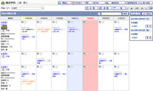 |
施設予約一覧 週間
・
日間
・
月間
施設予約のスケジュールを週間単位・日間単位・月間単位で参照できます。 |
|---|---|
| 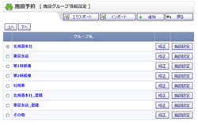 |
施設グループ情報設定
登録した施設グループの一覧が表示されます。 施設予約一覧画面で表示される際の並び順も変更することができます。 |
| 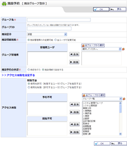 |
施設グループ登録
・
施設グループ登録確認
施設グループ編集 ・ 施設グループ編集確認 施設グループの登録・編集ができます。 施設グループ毎に登録・編集の実行権限が設定可能です。 |
 |
施設情報設定
登録した施設の一覧が表示されます。 施設予約一覧画面で表示される際の並び順も変更することができます。 |
 |
施設登録
・
施設登録確認
施設編集 ・ 施設編集確認 施設の登録・編集ができます。 所属する施設グループの施設区分毎に入力可能な項目が違います。 |
 |
施設インポート
・
施設インポート確認
csvファイルを指定し施設を一括で取込むことができます。 |
| 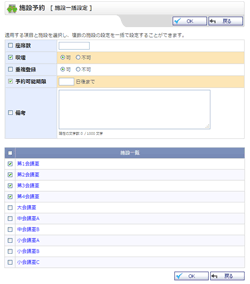 |
施設一括設定
・
施設一括設定確認
複数の施設の設定を一括で設定することができます。 |
 |
管理者設定メニュー
管理者グループに所属するユーザのみ使用可能な機能のメニュー画面です。 施設予約基本設定、自動データ削除設定、手動データ削除の機能へ遷移できます。 |
| 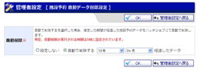 |
自動データ削除設定
・
自動データ削除設定確認
管理者グループに所属するユーザのみが使用可能です。 バッチ処理で施設予約データの削除をおこなう期間が設定できます。 |
| 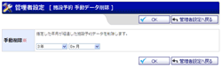 |
手動データ削除
・
手動データ削除確認
管理者グループに所属するユーザのみが使用可能です。 施設予約データの削除をおこなう期間が設定できます。 |
| 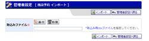 |
施設予約インポート
・
施設予約インポート確認
管理者グループに所属するユーザのみが使用可能です。 csvファイルを指定し施設予約を一括で取込むことができます。 |
| 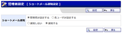 |
ショートメール通知設定
管理者グループに所属するユーザのみが使用可能です。 ショートメール通知設定を管理者が一括で設定する事ができます。 |
| 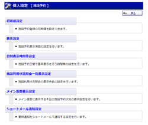 |
個人設定メニュー
施設予約に関する表示の設定をおこなう機能のメニュー画面です。 初期値設定・表示設定・日間表示時間帯設定・施設利用状況照会一覧表示設定の機能へ遷移できます。 |
| 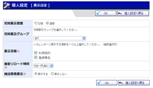 |
表示設定
・
表示設定確認
施設予約一覧画面で表示するデフォルトの施設グループと予約データの表示項目の設定ができます。 |
| 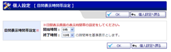 |
日間表示時間帯設定
・
日間表示時間帯設定確認
施設予約一覧[日間]画面で表示する時間帯が設定できます。 |
| 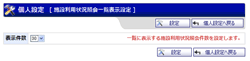 |
施設利用状況照会一覧表示設定
施設利用状況照会画面で、検索結果1ページに表示する件数が設定できます。 |
 |
施設利用状況照会
施設利用状況の検索と、csv形式でエクスポートができます。 |
 |
施設予約登録
・
施設予約登録確認
施設予約編集 ・ 施設予約編集確認 施設の予約・編集ができます。 |
| 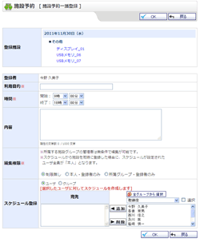 |
施設予約一括登録
・
施設予約一括登録確認
施設予約一括登録ができます。 |
| 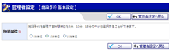 |
施設予約基本設定
・
施設予約基本設定確認
施設予約基本設定ができます。 |
| 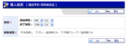 |
施設予約初期値設定
・
施設予約初期値設定確認
施設予約初期値設定ができます。 |
| 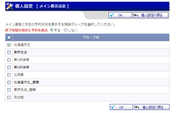 |
施設予約メイン画面表示設定
・
施設予約メイン画面表示設定確認
施設予約メイン画面表示設定ができます。 |
| 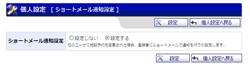 |
施設予約ショートメール通知設定
施設予約ショートメール通知設定ができます。 |
| 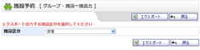 |
施設予約グループ・施設一括出力
施設予約のグループ・施設情報の一括エクスポートを行うことができます。 |